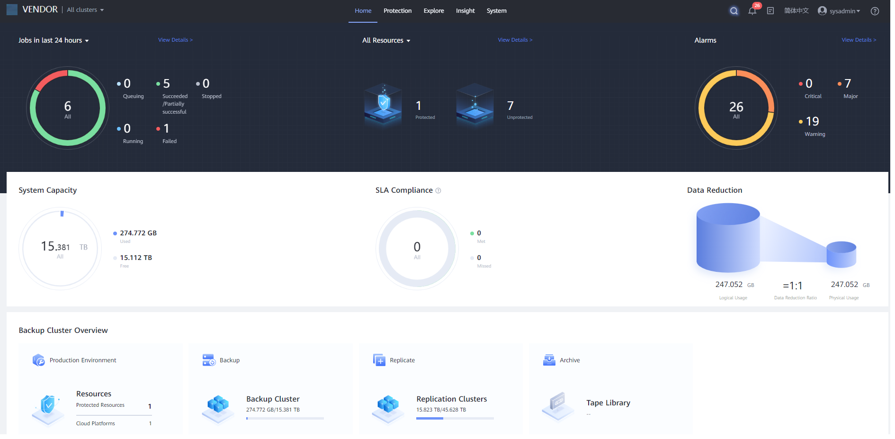

The home page helps you learn the job status, managed resources, alarms, capacity usage, SLA compliance, data reduction, capacity trend, and historical system performance.
- Home page of product 1.5.0

- Home page of product 1.6.0

- The GUI may vary with versions and models. The information displayed on the GUI is only for reference and is subject to the actual situation.
- When all copies of a resource are deleted, the file system where the resource copies reside will also be deleted. The system will automatically reclaim the space of the file system. If the used capacity is inconsistent with the actual situation, the space of the deleted file system may not be reclaimed. In this case, manually reclaim the space. For details about how to manually reclaim space, see Manually Reclaiming Space.